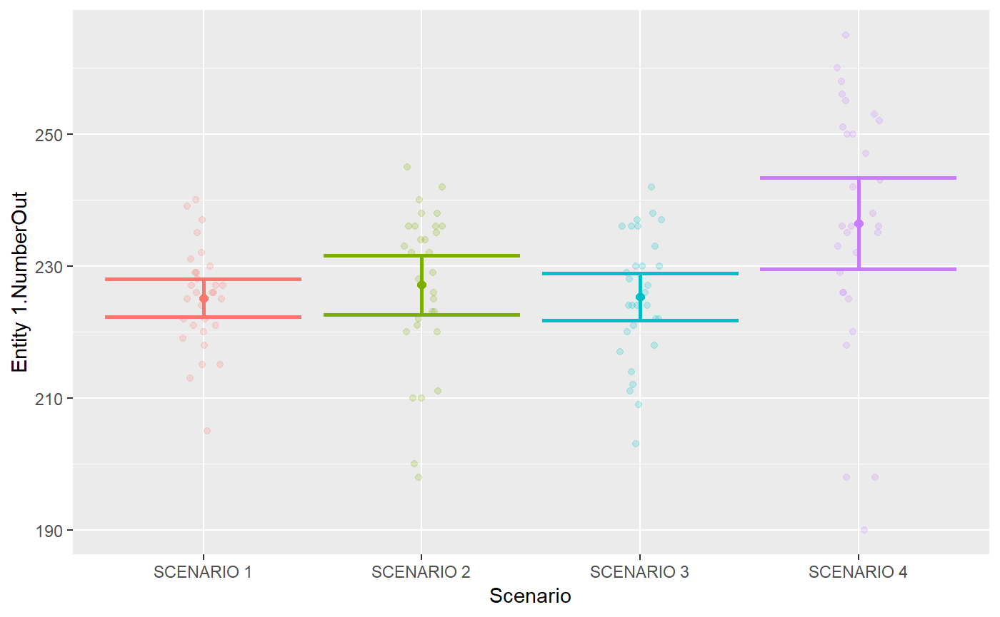
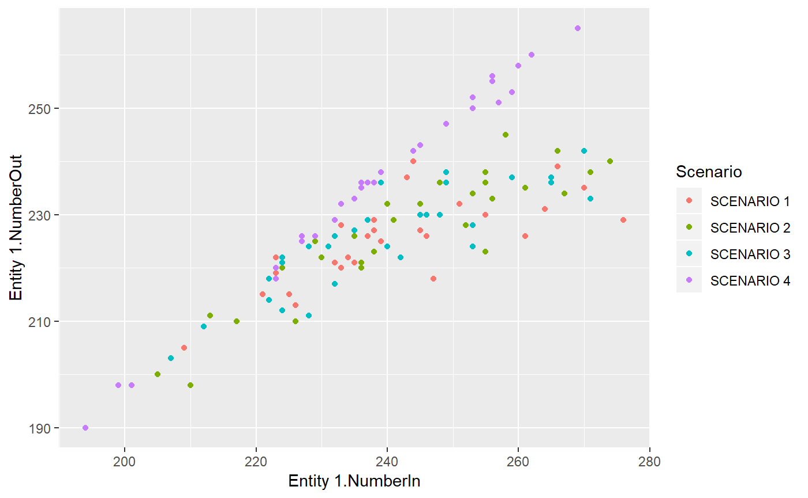
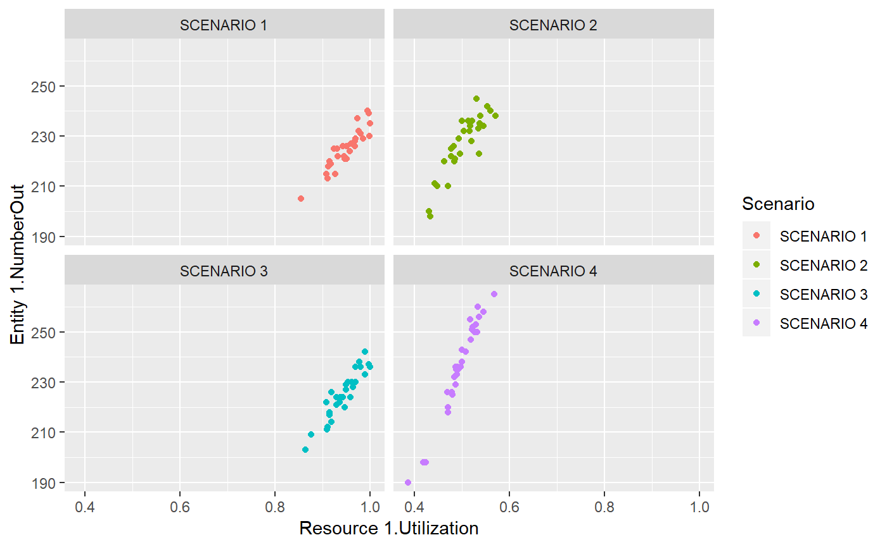

The goal of arena2r is to facilitate the analysis of Arena Simulation Software output in R. This package will be usefull to you, if:
- You are an useR;
- You use Arena Simulation;
- You dislike Arena’s simulation Process Analyzer, or similar tools, and have seen yourself struggling to summarise simulation results by hand at excel;
- You want to get your Arena Simulation Output directly to R and have a tidy data.frame with all your results to run your analyses there seamlessly.
I have seen myself in this position many times and resolved to put together a package and stop doing repetitive work.
Installation
You can install arena2r from github with:
# install.packages("devtools")
devtools::install_github("pedroliman/arena2r")Example
This is a basic example which shows you how to get your Arena results quickly into R. The basic idea is to run different scenarios and save each of them to a separate csv file. (Yes, you could use Process Analyzer (PAN) to run all scenarios, but to my knowledge there’s no way to get your data out of the PAN easily).
Follow these steps to get Arena simulation scenarios to R:
- Run your model with \(n\) replications. Do not change the number of replications between scenarios.
For each scenario, save a csv with simulation results clicking on “Tools > ReportDatabase > Export Summary Statistics to CSV File”. Use the standard options. If Arena throws an error, then you’ll have to figure out how to get your results to a csv file. Sometimes it’s necessary to save the report database as a *.mdb file before generating the csv file.
Open a new .R file, and run the following code:
# Load the library:
library(arena2r)
#> Carregando pacotes exigidos: ggplot2
#> Carregando pacotes exigidos: dplyr
#>
#> Attaching package: 'dplyr'
#> The following objects are masked from 'package:stats':
#>
#> filter, lag
#> The following objects are masked from 'package:base':
#>
#> intersect, setdiff, setequal, union
#> Carregando pacotes exigidos: purrr
library(ggplot2)
# Define the path to your folder with csv files. In my case, it's here:
# If you don't have any Arena csv files to play with, you can download my files in this repository.
my_path = paste0(getwd(), "/files/Arena14")
# Then, get a tidy results data.frame out of your files!
results = arena2r::get_simulation_results(path = my_path)
knitr::kable(head(results))| Scenario | Statistic | Replication | Value |
|---|---|---|---|
| SCENARIO 1 | Entity 1.NumberIn | 1 | 233 |
| SCENARIO 1 | Entity 1.NumberIn | 2 | 247 |
| SCENARIO 1 | Entity 1.NumberIn | 3 | 239 |
| SCENARIO 1 | Entity 1.NumberIn | 4 | 261 |
| SCENARIO 1 | Entity 1.NumberIn | 5 | 264 |
| SCENARIO 1 | Entity 1.NumberIn | 6 | 266 |
After these steps, now you have a tidy data.frame with your results. Let’s get into possible visualizations. Usually you’ll be interested in the mean confidence interval for some response variable, across scenarios.
# Plot a Statistic confidence interval across scenarios!
arena2r::plot_confint(sim_results = results, response_variable = "Entity 1.NumberOut")
#> Warning: Ignoring unknown parameters: mult
Now let’s explore the relationship between two variables, across scenarios and replications:
# Now let's plot analyse the relationship between two variables:
arena2r::plot_scatter(sim_results = results, x_variable = "Entity 1.NumberIn", y_variable = "Entity 1.NumberOut")
Now let’s go a bit deeper and leverage ggplot2 to create a plot faceted by Scenario:
# If you use ggplot and you want to get more customized plots, I suggest you to spread your data.frame:
wide_results = results %>%
tidyr::spread(Statistic, Value)
# Recreating my plot with ggplot, now loking at Resource Utilization:
p = ggplot(data = wide_results, mapping = aes(x = `Resource 1.Utilization`, y = `Entity 1.NumberOut`, color = Scenario)) + geom_point() + facet_wrap(~Scenario)
p
Finally, let’s summarise every statistic across all scenarios.
statistics_summary = arena2r::get_statistics_summary(sim_results = results, confidence = 0.95)
knitr::kable(head(statistics_summary))| Scenario | Statistic | Mean | Median | LowerLimit | UpperLimit | StandardDev | Min | Max | CV |
|---|---|---|---|---|---|---|---|---|---|
| SCENARIO 1 | Entity 1.NumberIn | 241.03333 | 238.000000 | 235.143546 | 246.92312 | 2.8797682 | 209.000000 | 276.0000 | 0.0119476 |
| SCENARIO 1 | Entity 1.NumberOut | 225.13333 | 226.000000 | 222.244712 | 228.02195 | 1.4123701 | 205.000000 | 240.0000 | 0.0062735 |
| SCENARIO 1 | Entity 1.NVATime | 0.00000 | 0.000000 | 0.000000 | 0.00000 | 0.0000000 | 0.000000 | 0.0000 | NaN |
| SCENARIO 1 | Entity 1.OtherTime | 0.00000 | 0.000000 | 0.000000 | 0.00000 | 0.0000000 | 0.000000 | 0.0000 | NaN |
| SCENARIO 1 | Entity 1.TotalTime | 11.15272 | 9.730454 | 9.341412 | 12.96402 | 0.8856239 | 5.161059 | 25.2438 | 0.0794088 |
| SCENARIO 1 | Entity 1.TranTime | 0.00000 | 0.000000 | 0.000000 | 0.00000 | 0.0000000 | 0.000000 | 0.0000 | NaN |
Wishlist
- The package won’t run different simulations for you based on a Design of Experiments;
- There is no guarantee that the package will acomodate future changes in the csv format exported by Arena. The package is tested with the Arena 14.00 version;
- The package only uses the standard csv pattern (If you are Brazillian like me, it’s easier to change your regional configurations).
Pull requests are welcome.